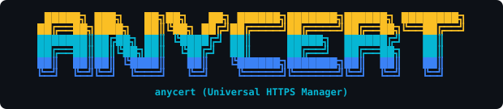
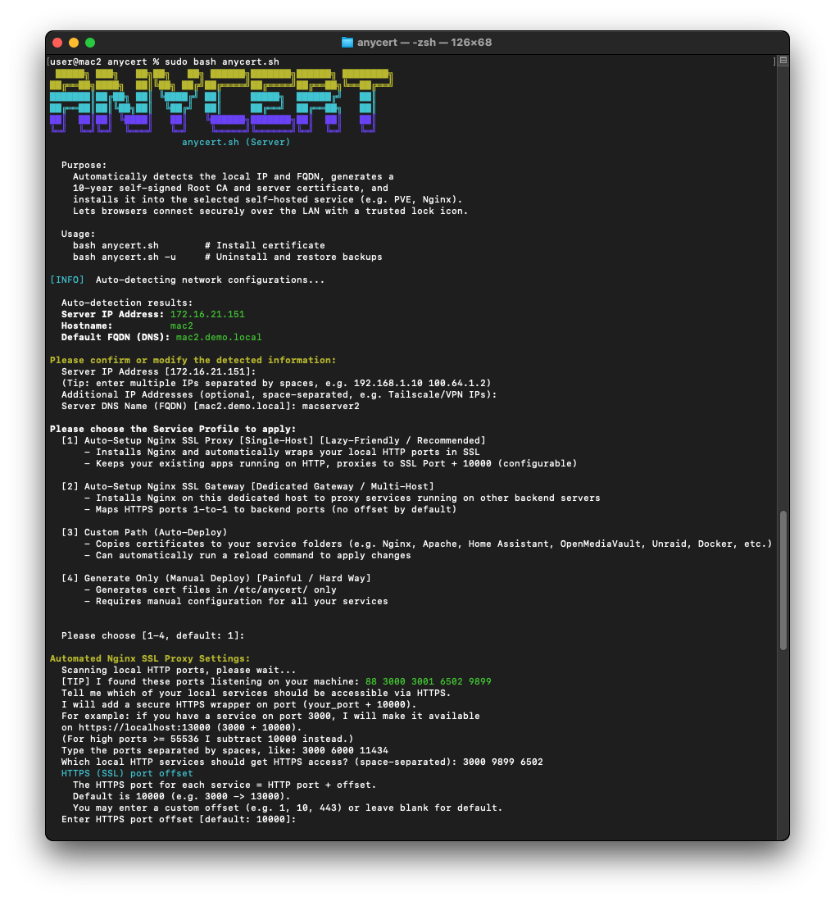
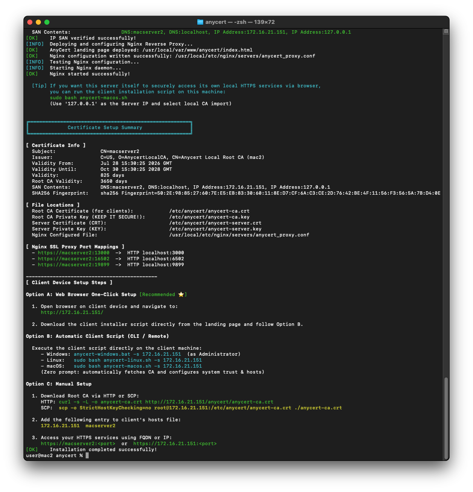
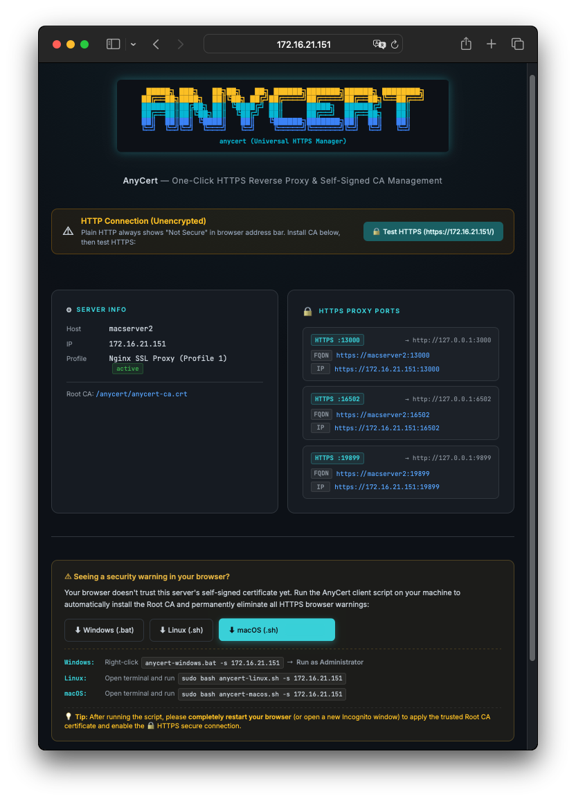
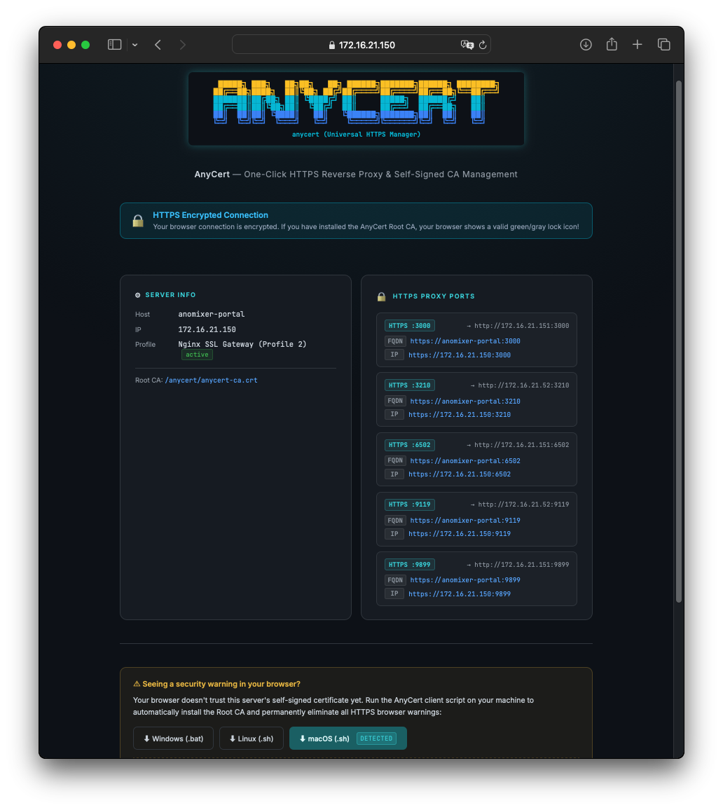
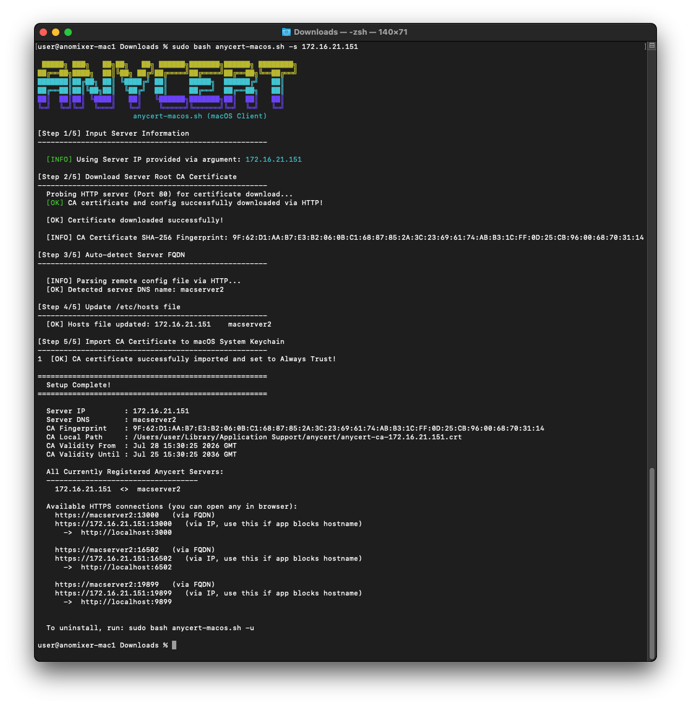
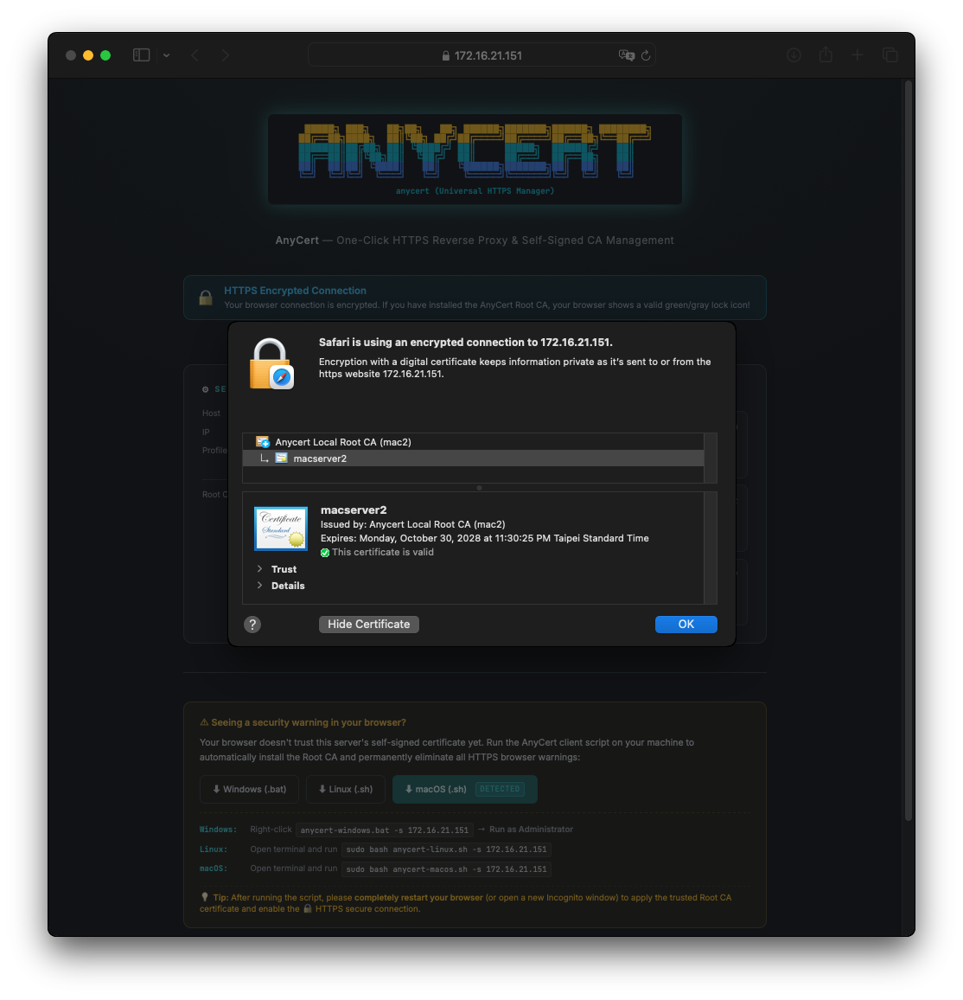

專為內網開發、自架服務（NAS、HomeLab、PVE、Microservices）設計。自動簽發 10 年 Root CA 與 825 天伺服器憑證，Nginx 一鍵反代，全自動導入用戶端信任。 Automated 10-year local Root CA issuance & Nginx SSL wrapping for internal services, NAS, HomeLab, Proxmox VE, and microservices. Eliminate 'Not Secure' warnings across all client devices.
無需購買網域名稱、無需外部 DNS 驗證，解決內網連線所有憑證痛點 No domain name required, no cloud dependencies. Fix internal HTTPS warnings effortless
自動產生 RFC 規格完整的 Root CA（ critical, CA:true），並簽發 825 天符合現代瀏覽器規範的伺服器憑證。 Generates fully compliant Root CA certificates with 10-year validity and 825-day server certificates compatible with all modern browsers.
既有 HTTP 服務無需做任何修改！AnyCert 自動為本地連接埠加上 SSL 防護（HTTP Port + 自訂偏移量或 1:1 直通）。 Keep your backend HTTP services running as-is. AnyCert automatically wraps your local ports with Nginx SSL proxies seamlessly.
支援實體 LAN IP、FQDN、localhost，並可寫入 Tailscale、ZeroTier 或 VPN 虛擬網段 IP，全通道證書皆安全有效。 Includes local LAN IPs, FQDNs, localhost, and custom Tailscale/VPN IPs into certificate Subject Alternative Names (SAN).
提供 Windows、Linux 與 macOS 專用安裝腳本，一鍵將 CA 匯入系統信任區、Chrome NSSDB 並自動配置 hosts 路由。 Cross-platform installer scripts automatically import Root CA into OS Trust Stores, Chrome NSSDB, and update system hosts files.
Nginx 預設放行 Port 80 / 443 導覽頁，用戶端打開瀏覽器即可下載腳本與憑證，全自動偵測裝置 OS 呈現專屬下載按鈕。 Integrated Web Landing Page on Port 80/443 allows zero-password downloads for scripts and certificates with automatic client OS detection.
全專案 Windows 腳本採用原生 Batch 與 VBScript 重構，避開 ExecutionPolicy 限制與 CMD 括號 Bug，並支援一鍵完全反安裝 (`-u`)。 Built with pure CMD batch and VBScript, bypassing ExecutionPolicy restrictions. Includes full one-click clean uninstall (`-u`).
除了消除紅色「不安全」警語，更有三大現代 Web API 與資安關鍵因素 Beyond removing browser warning icons, three critical API and security reasons
現代瀏覽器（Chrome, Safari, Edge）規定大量強大 Web API 僅能在 HTTPS 安全上下文（或 localhost）中執行。使用 HTTP 跨裝置連線時將被強行禁用： Browsers strictly disable advanced Web APIs on non-localhost HTTP connections across local devices:
在公司、學校、共享宿舍或 Wi-Fi 區域網路中，未加密的 HTTP 流量極易被同網路的其他人使用 Wireshark 嗅探工具側錄。AnyCert 的全通道 HTTPS 能有效保護： Unencrypted HTTP traffic in shared LAN or Wi-Fi networks is vulnerable to packet sniffing (Wireshark). AnyCert HTTPS encrypts:
Google Chrome 對普通 HTTP 連線有嚴格的「不安全下載」防護機制。當您從自託管服務下載系統備份檔、AI 模型權重檔或 Log 報表時，瀏覽器會主動將其判定為風險下載並直接攔截封鎖。使用 AnyCert 可獲得完全信任，順暢存檔。 Modern Chrome strictly blocks files downloaded over plain HTTP connections (system backups, AI model weights, log reports). HTTPS ensures smooth, unblocked downloads.
擺脫明文 HTTP 警語與傳統自簽憑證的紅色報錯畫面 Eliminate plain HTTP warnings and self-signed certificate untrusted red screens
比較各類內網 HTTPS 實現方式，為何 AnyCert 是最適合 Homelab 與開發團隊的解答 Comprehensive breakdown of internal HTTPS options and why AnyCert stands out
| 比較項目Feature | 傳統自簽憑證Untrusted Self-Signed | Let's Encrypt + CFLet's Encrypt + Cloudflare | Cloudflared / ngrokCloudflared / Tunnel | Tailscale HTTPSTailscale HTTPS | AnyCert 內網信任AnyCert (Universal) |
|---|---|---|---|---|---|
| 離線/純內網運作100% Offline / Pure LAN | 🟢 是🟢 Yes | ❌ 需連網更新憑證❌ Needs Online Renewal | ❌ 需連網 Tunnel❌ Needs Online Tunnel | ❌ 需連網更新憑證❌ Needs Online Renewal | 🟢 100% 離線 / 零外網依賴🟢 100% Offline / Zero Cloud |
| 無需公開 DomainNo Public Domain | 🟢 不需要🟢 Not Needed | ❌ 需購買公網網域❌ Needs Paid Domain | ❌ 需公網網域/配額❌ Needs Domain / Quota | ❌ 限制 *.ts.net❌ Restricted to *.ts.net | 🟢 不需要 (IP 或 FQDN 皆可)🟢 No (IP or FQDN) |
| 支援直接以 IP 存取Direct IP Access | ⚠️ 顯示紅字警告⚠️ Shows Red Warning | ❌ 否 (僅限 Domain)❌ No (Domain Only) | ❌ 否❌ No | ❌ 否❌ No | 🟢 支援多 IP SAN 綁定🟢 Multi-IP SAN Support |
| 外網隱私暴露風險Privacy & CT Logs Risk | 🟢 無🟢 None | ⚠️ 高 (CT Logs 暴露)⚠️ High (CT Logs Public) | ⚠️ 中 (流量經過第三方)⚠️ Medium (Third-Party Relay) | 🟢 低🟢 Low | 🟢 零隱私暴露 / 完全封閉🟢 Zero Privacy Exposure |
| 用戶端維護成本Client Maintenance | ❌ 每次到期重新手動匯入❌ Manual Import Every Renewal | 🟢 瀏覽器原生信任🟢 Native Browser Trust | 🟢 瀏覽器原生信任🟢 Native Browser Trust | ❌ 每台需常駐 Tailscale❌ Requires Tailscale App | 🟢 10 年一次設定終身免重設🟢 10-Year Set & Forget |
| 費用Cost | 免費Free | 免費 (3個月重簽)Free (3-Mo Renewal) | 免費 / 部分付費Free / Paid Tiers | 免費 / 企業收費Free / Paid Tiers | 🟢 100% 完全免費 / 開源🟢 100% Free & Open Source |
| 功能特性Feature | mkcertmkcert | AnyCert Profile [4] (僅產生)Profile 4 (Generate) | AnyCert Profile [3] (自訂路徑)Profile 3 (Custom) | AnyCert Profile [1] (Nginx 反代)Profile 1 (Nginx Proxy) |
|---|---|---|---|---|
| 本機開發 HTTPS (localhost)Localhost HTTPS | ✅ 是✅ Yes | ✅ 是✅ Yes | ✅ 是✅ Yes | ✅ 是✅ Yes |
| LAN / IP SAN 支援LAN & IP SAN Support | ✅ 是✅ Yes | ✅ 是✅ Yes | ✅ 是✅ Yes | ✅ 是 (支援多 IP)✅ Yes (Multi-IP) |
| 匯入 OS / Chrome NSS 信任區OS & Chrome NSS Trust | ✅ 自動✅ Automatic | ✅ 搭配用戶端腳本自動✅ Auto via Client Script | ✅ 搭配用戶端腳本自動✅ Auto via Client Script | ✅ 伺服器/用戶端腳本自動✅ Auto via Server/Client Script |
| 自動複製憑證至服務目錄Auto-Copy Certs to Service | ❌ 手動拷貝❌ Manual Copy | ❌ 手動拷貝❌ Manual Copy | ✅ 自動複製✅ Auto Copy | ✅ 自動配置 (Nginx)✅ Auto Config (Nginx) |
| 部署後自動重載服務Auto-Reload Service | ❌ 否❌ No | ❌ 否❌ No | ✅ 可設定 Reload 指令✅ Configurable Reload | ✅ 自動 reload Nginx✅ Auto Reload (Nginx) |
| 自動安裝 Nginx SSL 反向代理Auto-Install Nginx Proxy | ❌ 否❌ No | ❌ 否❌ No | ❌ 否❌ No | 🟢 全自動下載並安裝 Nginx🟢 Auto Download & Install Nginx |
| LAN 多裝置 CA 自動分發Auto-Distribute CA to LAN | ❌ 手動複製 rootCA.pem❌ Manual Copy rootCA.pem | ✅ 用戶端腳本自動分發✅ Auto via Client Script | ✅ 用戶端腳本自動分發✅ Auto via Client Script | 🟢 Web 免密碼/腳本自動分發🟢 Zero-Password Web / Script |
| 用戶端 hosts 自動寫入Client Hosts Auto-Update | ❌ 手動修改❌ Manual Edit | ✅ 用戶端腳本自動寫入✅ Auto via Client Script | ✅ 用戶端腳本自動寫入✅ Auto via Client Script | ✅ 用戶端腳本自動寫入✅ Auto via Client Script |
| 需安裝 Go 執行檔 (binary)Requires Binary Installation | ⚠️ 需要安裝 binary⚠️ Requires Binary | 🟢 免安裝 (純 Shell/Batch)🟢 No Install (Pure Script) | 🟢 免安裝 (純 Shell/Batch)🟢 No Install (Pure Script) | 🟢 免安裝 (純 Shell/Batch)🟢 No Install (Pure Script) |
| 比較項目Aspect | 方案 A：子網域分流 (走 443 埠)Option A: Subdomains (Port 443) | 方案 B：AnyCert Port 偏移 (共用 FQDN)Option B: AnyCert Port Offset |
|---|---|---|
| 網址外觀URL Style | 漂亮，如 https://llmchat.demo.localClean, e.g. https://llmchat.demo.local | 帶有埠號，如 https://server.demo.local:13000With port, e.g. https://server.demo.local:13000 |
| 新增內網服務時Adding New Services | ❌ 每台 Client 電腦都要手動改 hosts 檔。每新開一個 Web 服務，全團隊每個人都要改一次 /etc/hosts 新增域名，維護極其繁瑣。❌ Manual hosts file updates per client device for every new service added. High maintenance overhead. | ⚡ Client 電腦終身免修改！所有 Client 只要第一天設定過，往後就能直接存取任何新 Port，零摩擦力！⚡ Zero client maintenance forever! Once configured, clients immediately access any new port seamlessly. |
| 憑證管理成本Certificate Management | ❌ 必須為每個新子網域簽發新憑證，或被迫維護繁瑣的 Wildcard 泛網域自建憑證。❌ Must issue new certs for every subdomain or maintain complex Wildcard certs. | 🛡️ 伺服器憑證只需簽發一次並包含 IP SAN，Nginx 重新 reload 即可，管理成本近乎為零。🛡️ Issue server cert once with IP SANs, reload Nginx, near-zero management cost. |
深入了解五大 Profile 的專屬架構流程圖與實際部署範例 Explore dedicated architecture flowcharts and deployment examples for all five profiles
最推薦模式 ⭐：自動掃描本機正在監聽的 HTTP Ports（如 Open-WebUI :3000、Ollama :11434），自動加上 HTTPS SSL 包裹（SSL Port = HTTP Port + 自訂偏移量，預設 +10000）。 Recommended ⭐: Scans local listening HTTP ports and adds HTTPS wrappers automatically on port + offset (default +10000).
sudo bash anycert.sh 或 anycert.bat ➔ 選擇
[1] Nginx SSL Proxy
Run command: sudo bash anycert.sh or anycert.bat ➔ Select
[1] Nginx SSL ProxyHTTP :3000 (Open-WebUI) ➔ https://server.demo.local:13000 🔒HTTP :11434 (Ollama) ➔ https://server.demo.local:21434 🔒
用於獨立網關主機：代理其他遠端內網伺服器的 HTTP 服務，預設 1:1 直通連接埠（如 `HTTPS :6502 -> http://172.16.21.52:6502`）。 Deployed on a gateway server to reverse proxy HTTP services from other backend servers with 1:1 port mapping (offset 0).
[2] Nginx SSL Gateway ➔ 輸入遠端 IP 與 Port 清單:
172.16.21.50:5000 172.16.21.51:8123 172.16.21.51:15000 172.16.21.53:8080
Run command: Select [2] Nginx SSL Gateway ➔ Enter IP & port list:
172.16.21.50:5000 172.16.21.51:8123 172.16.21.51:15000 172.16.21.53:8080172.16.21.50:5000 (Synology NAS on Server A) ➔ https://gateway.demo.local:5000 🔒172.16.21.51:8123 (Home Assistant on Server B) ➔ https://gateway.demo.local:8123 🔒172.16.21.51:15000 (3D Printer PC on Server B) ➔ https://gateway.demo.local:15000 🔒172.16.21.53:8080 (Dev Server on Server C) ➔ https://gateway.demo.local:8080 🔒
自動將簽發的 CRT / KEY 複製至您指定的服務路徑（如 IIS、既有 Nginx、Apache、Emby、Plex、Docker 等），並可執行自動 Reload 命令。 Deploys generated certs to custom file paths (IIS, Nginx, Apache, Emby, Plex, Docker) with optional automatic reload commands.
[3] Custom Path ➔ 輸入目標路徑與重新載入指令
Run command: Select [3] Custom Path ➔ Enter target directory & reload
commandTarget Directory: /etc/emby/certs/Auto Reload Cmd: docker restart emby
僅於伺服器端產生 Root CA 與伺服器憑證檔案，不自動配置任何反向代理，適合需完全手動設定的進階管理者。 Generates certificate files only without configuring proxy servers. Suitable for manual advanced configurations.
[4] Generate Only ➔ 取得本機憑證檔案
Run command: Select [4] Generate Only ➔ Retrieve local cert
filesOutputs: ./certs/server.crt & ./certs/server.keyuvicorn main:app --ssl-keyfile server.key --ssl-certfile server.crt
僅在 PVE 系統自動顯示！自動替換 `/etc/pve/nodes/
sudo bash anycert.sh ➔ 自動進入
[5] Proxmox VE
Run command: Run sudo bash anycert.sh on PVE host ➔ Auto select
[5] Proxmox VETarget File: /etc/pve/nodes/pve1/pveproxy-ssl.pemPVE Web Console: https://pve1.demo.local:8006 🔒
AnyCert 已於區域網路實機環境通過完整交叉測試，支援主流 Server 與 Client 作業系統 Cross-platform compatibility tested across real-world LAN Server and Client operating systems
| 伺服器端平台Server Platform | Windows (Win 10/11/2016+) |
Linux (Ubuntu/Debian) |
macOS (12+ Monterey+) |
WSL 2 (Linux Subsystem) |
Proxmox VE (PVE 7 / 8 / 9) |
|---|---|---|---|---|---|
| 伺服器端腳本Server Script | anycert.bat |
anycert.sh |
anycert.sh |
anycert.sh |
anycert.sh |
| 一鍵安裝部署Installation & Setup | ✅ 支援✅ Supported (Nginx zip 綠色解壓)(Nginx zip extract) |
✅ 支援✅ Supported (apt/dnf/yum)(apt/dnf/yum) |
✅ 支援✅ Supported (Homebrew Nginx)(Homebrew Nginx) |
✅ 支援✅ Supported (附宿主 netsh 指令)(With netsh rules) |
✅ 支援✅ Supported (自動代換 pveproxy)(Auto pveproxy reload) |
| Server 本機存取Local Browser Access | ✅ 一鍵匯入 Trust✅ One-click Trust | ✅ 執行客戶端腳本導入✅ Import via Client Script | ✅ 執行客戶端腳本導入✅ Import via Client Script | ✅ 執行客戶端腳本導入✅ Import via Client Script | 不適用 (無 GUI 介面)N/A (Headless) |
| 一鍵反安裝 (`-u`) 支援Clean Uninstall (-u) | ✅ 支援 (anycert.bat -u)✅ Supported (anycert.bat -u) | ✅ 支援 (sudo bash anycert.sh -u)✅ Supported (sudo bash anycert.sh -u) | ✅ 支援 (sudo bash anycert.sh -u)✅ Supported (sudo bash anycert.sh -u) | ✅ 支援 (sudo bash anycert.sh -u)✅ Supported (sudo bash anycert.sh -u) | ✅ 支援 (sudo bash anycert.sh -u)✅ Supported (sudo bash anycert.sh -u) |
| 用戶端特性Client Feature | Windows (Win 10/11/Server) |
Linux (Ubuntu/Debian) |
macOS (12+ Monterey+) |
|---|---|---|---|
| 用戶端腳本Client Script | anycert-windows.bat |
anycert-linux.sh |
anycert-macos.sh |
| 自動匯入系統信任區OS System Trust Store | ✅ CertUtil (Root Store)✅ CertUtil (Root Store) | ✅ ca-certificates / update-ca-trust✅ ca-certificates / update-ca-trust | ✅ security (System Keychain)✅ security (System Keychain) |
| Chrome M146+ NSSDB 支援Chrome NSSDB Support | ✅ Windows System Store✅ Windows System Store | ✅ ~/.pki/nssdb & ~/.local/share/pki/nssdb✅ ~/.pki/nssdb & ~/.local/share/pki/nssdb | ✅ macOS System Keychain✅ macOS System Keychain |
| Hosts 檔案自動配置Hosts File Update | ✅ 自動寫入 hosts✅ Auto Update hosts | ✅ 自動寫入 /etc/hosts✅ Auto Update /etc/hosts | ✅ 自動寫入 /etc/hosts✅ Auto Update /etc/hosts |
| 一鍵反安裝 (`-u`) 支援Clean Uninstall (-u) | ✅ 支援 (anycert-windows.bat -u)✅ Supported (anycert-windows.bat -u) | ✅ 支援 (sudo bash anycert-linux.sh -u)✅ Supported (sudo bash anycert-linux.sh -u) | ✅ 支援 (sudo bash anycert-macos.sh -u)✅ Supported (sudo bash anycert-macos.sh -u) |
第一步：伺服器端簽發 ➔ 第二步：用戶端一鍵信任 Step 1: Server issuance ➔ Step 2: Client trust import
點擊圖片可放大檢視詳細截圖 Click any screenshot to view full screen image



.sec-bar) 探測 CA 信任狀態，並提供智慧 OS 下載。
Features connection security status bar probing CA trust and smart OS download.

.sec-bar) 探測 CA 信任狀態，並提供智慧 OS 下載。
Features connection security status bar probing CA trust and smart OS download.


https://<SERVER_IP>/ 或代理埠，即可看到亮起綠色/灰色安全鎖頭 🔒！
Modern browsers always label plain `http://` connections as "Not Secure". After running the
client script, please completely restart your browser and switch to
https://<SERVER_IP>/ to view the secure 🔒 lock icon.
anycert.bat 或 anycert.sh），將 IP 設定為本機（127.0.0.1）。若在 Windows 平台上，腳本最後會詢問是否匯入本機信任區（確認後即無需再執行用戶端腳本）；若是 Linux / macOS / WSL 平台，請在同一台電腦執行一次對應平台的用戶端腳本即可。
Yes! First run the server script (anycert.bat or anycert.sh) and specify 127.0.0.1 as the IP. On Windows, the installer will ask if you want to import the CA into the local trust store (skipping the need for a client script). On Linux, macOS, or WSL, simply run the corresponding client script once on the same computer.
IP-A（例如 192.168.1.100），並新增第二個虛擬 IP IP-B（例如 192.168.1.200）。IP-A:port（或 127.0.0.1:port），而 Nginx 開啟 SSL 並僅監聽 IP-B:port。https://IP-B:3000/ 🔒 → Nginx 解密 → 轉發至 http://127.0.0.1:3000/ 🔓，成功達成 1:1 Port 不衝突。0.0.0.0 綁定衝突 (EADDRINUSE)： 許多後端服務與 Docker 容器預設會監聽 0.0.0.0:PORT（綁定所有 IP 介面）。如果後端佔用了 0.0.0.0:3000，Nginx 在 IP-B:3000 啟動時會因埠號衝突而直接崩潰。解決方式： 必須修改後端服務設定或 Docker 埠號映射，明確指定僅監聽 127.0.0.1 或 IP-A。IP-B 在路由器中已設為靜態或保留；若在雲端主機 (AWS/GCP/Azure)，需透過雲端面板申購配發 Secondary Private IP。ip addr add 或 Windows netsh）手動新增的 IP Alias，在重啟後會消失，需寫入系統網路設定檔（如 netplan / Windows Registry）維護持久化。IP-A (e.g. 192.168.1.100) and add a secondary virtual IP-B (e.g. 192.168.1.200) to the network interface.IP-A:port (or 127.0.0.1:port), while Nginx SSL listens on IP-B:port.https://IP-B:3000/ 🔒 → decrypted by Nginx → forwarded to http://127.0.0.1:3000/ 🔓 with zero port conflicts.0.0.0.0 Binding Collision (EADDRINUSE): Many backend applications and Docker containers default to listening on 0.0.0.0:PORT (all interfaces). If a backend service claims 0.0.0.0:3000, Nginx will fail to start on IP-B:3000 due to port collision. Solution: You must update the backend config or Docker port mapping to bind explicitly to 127.0.0.1 or IP-A.IP-B is reserved/static on your router. On cloud providers (AWS/GCP/Azure), assign a Secondary Private IP via the cloud management console.ip addr add or Windows netsh) will disappear upon reboot. Save them to system network configs (e.g. netplan, systemd-networkd, or Windows Registry) to survive reboots.192.168.x.x) 或 Tailscale 虛擬網段直接簽發。anycert-windows.bat / anycert-linux.sh / anycert-macos.sh 一鍵腳本，自動遠端下載 CA、自動導入系統與 Chrome 信任庫並配置 hosts。192.168.x.x), or Tailscale VPN networks.anycert-windows.bat, anycert-linux.sh, anycert-macos.sh) that automatically fetch the CA, install it into system & Chrome trust stores, and update local hosts.anycert-ca.crt 即可亮起安全鎖頭 🔒！https://<SERVER_IP>:xxxx)： 由於手機無 Root 權限無法修訂本機 hosts 檔，AnyCert 簽發時已將伺服器實體 IP 與 Tailscale IP 寫入憑證 SAN 欄位中，因此無需修改 hosts，手機直接打 IP 網址即可安全連線！https://<FQDN>:xxxx)： 需在內網路由器或 DNS 伺服器（如 AdGuard Home、Pi-hole、OpenWrt）自訂 Local DNS A 紀錄指到伺服器 IP。http://<SERVER_IP>/（AnyCert 預設 Web 首頁），點擊下載 anycert-ca.crt。http://<SERVER_IP>/ 下載 anycert-ca.crt。anycert-ca.crt 檔案完成匯入。anycert-ca.crt 🔒!https://<SERVER_IP>:xxxx): Non-rooted mobile devices cannot edit local hosts files. AnyCert includes server IPs in the certificate's SAN fields, so direct IP connections work securely without editing hosts!https://<FQDN>:xxxx): You must configure a Local DNS A Record pointing to the server IP on your router or local DNS server (e.g. AdGuard Home, Pi-hole, OpenWrt).http://<SERVER_IP>/ (AnyCert landing page) in Safari and tap Download Root CA.http://<SERVER_IP>/ in Chrome and download anycert-ca.crt.anycert-ca.crt file.anycert-windows.bat -s 192.168.1.10anycert-windows.bat -s 192.168.1.20%ProgramData%\anycert\anycert-info.txt）。下次不帶 -s 直接執行時，腳本會列出所有已登記的伺服器，讓您選擇「新增 / 移除 / 離開」。
Absolutely! Each AnyCert server has its own independent Root CA, and the client scripts fully support multiple servers coexisting on the same machine.anycert-windows.bat -s 192.168.1.10anycert-windows.bat -s 192.168.1.20%ProgramData%\anycert\anycert-info.txt). When you run the client script again without -s, it lists all registered servers and lets you choose to Add, Remove, or Exit.